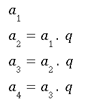
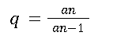
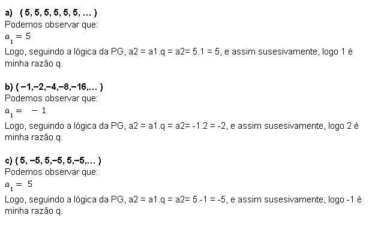
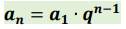
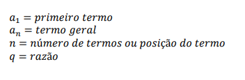
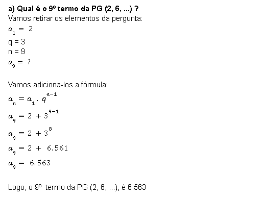
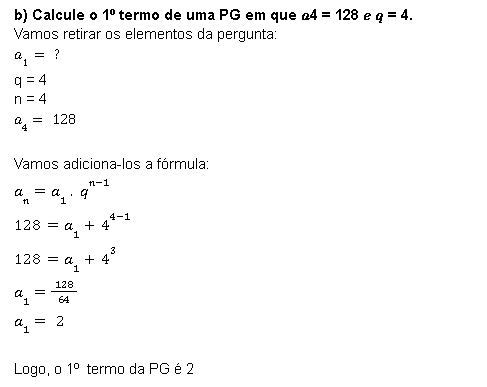

Uma PG, ou seja, Progressão Geométrica é uma sequência de números em que cada termo, a partir do segundo, é o produto do anterior por uma constante que chamamos de q.
Portanto, uma Progressão Geométrica (PG) é uma sequência de números na qual o quociente entre cada um dos termos, a partir do segundo, e o seu termo anterior é constante e representado pela letra q.
1- Vamos analizar algumas PGs e determinar a razão, vejamos:
Bem, vamos então para o termo geral, a fórmula do termo geral da PG serve, assim com a da PA, para encontar algum elemento que se econtra distante dentro de uma sequência infinita, e que muitas vezes não nos é dado, portanto não conseguimos enchergar ele na sequência. Vejamos a Fórmula então:
1- Os conceitos vistos nas PAs, também são válidos para as PGs, logo é bom relembrá-los:
2- Vamos então resolver 2 problelmas com a Fórmula do Termo Geral da PG para fixarmos bem, vejamos:
Exemplo 1:
Exemplo 2:
